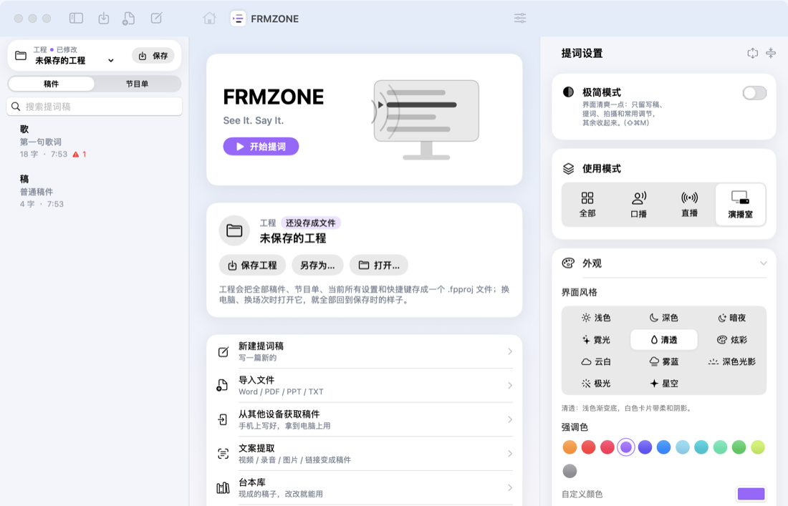
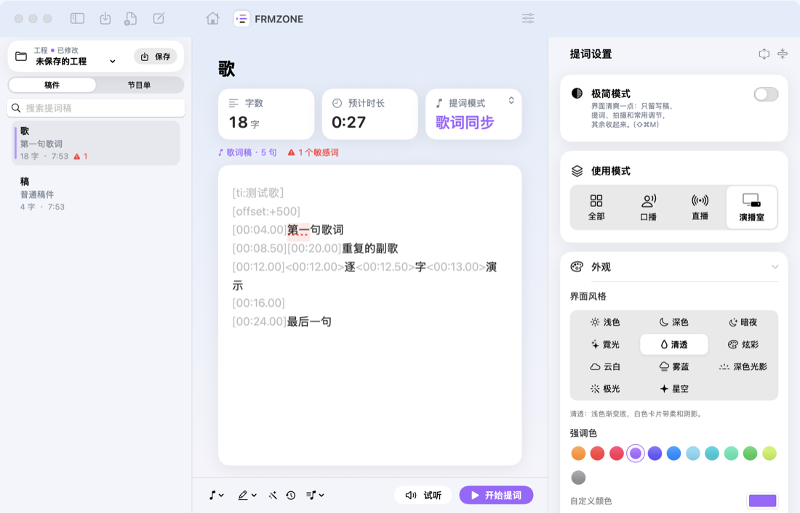
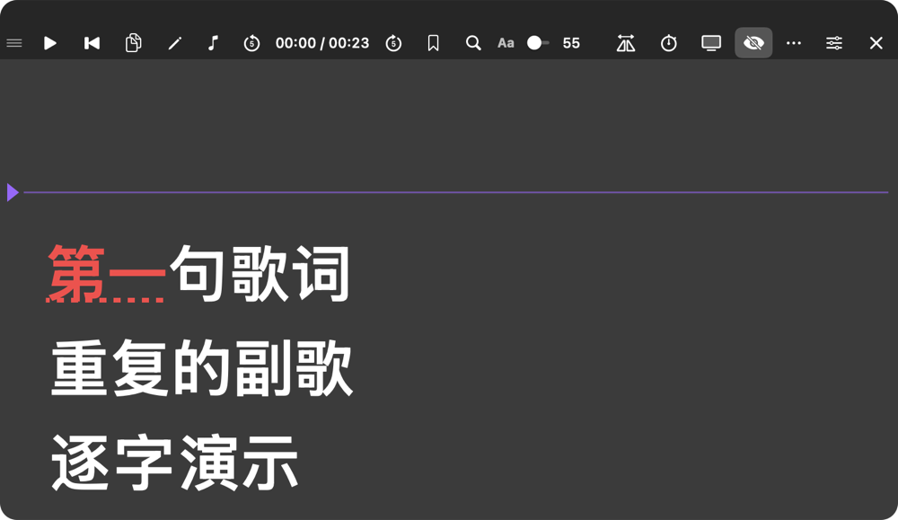

0五分钟上手
没用过提词器也没关系。这一节只讲最少的东西，照着做一遍，你就能对着屏幕念完第一条。
第一步：把稿子放进来。
打开软件先看到的是主页。左边是你所有的稿件，中间是各种入口，右边是提词设置。

主窗口。想新写一篇，点「新建稿件」；已经有 Word / PPT / TXT，点「导入文件」；不知道写什么，点「台本库」拿一篇现成的改。
第二步：点开这篇稿子，看一眼字数和时长。

选中左边的稿件，中间就变成编辑区。标题下面写着「119 字 · 约 32 秒」，这是按正常语速估的。蓝色的【方括号】是给你自己看的提示，念的时候会跳过；用两个星号包起来的词会变色，用来标重点。
第三步：点右下角「开始提词」。

提词窗。中间那条横线就是「阅读线」，色带盖住的那一句就是你现在该念的。最上面一排从左到右是：播放 / 暂停、回到开头、编辑、提词模式、慢一点 / 快一点、书签、目录、查找、字号、镜像、计时器、外接屏幕、隐形提词、外观、关闭。
要记住的只有三件事
- 模式选「智能跟读」，对着麦克风念，文字就跟着你走；你停它也停。想让文字自己匀速走，就选「匀速滚动」。
- 空格键 = 开始 / 暂停，Esc = 关闭提词窗。
- 第一次用会问你要麦克风和语音识别权限，要点「好」，否则智能跟读用不了。
剩下的都是锦上添花，用到哪一节再翻哪一节。
1软件简介
「FRMZONE」是一款运行在 Mac 上的提词软件，主要功能：
| 功能 | 说明 |
|---|---|
| 智能跟读 | 通过麦克风识别你说的话，读到哪里，文字就滚动到哪里；停下来它也停下来；可设提前量和专有名词 |
| 当前句高亮 | 正在读的整句话加色带，眼睛更容易定位 |
| 匀速滚动 / 手动翻页 | 按固定速度滚动，或用键盘、翻页笔自己翻 |
| 隐形提词 | 录屏、直播、共享屏幕时，提词窗不会出现在画面里 |
| 悬浮置顶 | 提词窗浮在所有窗口之上，可设置鼠标穿透 |
| 外接屏幕输出 | 可同时输出到多块显示器，每块单独开关和选正常 / 镜像，配合提词玻璃做演播室提词 |
| 读稿计时 | 正计时 / 倒计时，超时提醒 |
| 歌词同步 | 导入 LRC 歌词和伴奏，按播放进度滚动，逐字卡拉 OK 高亮，间奏倒数；可边听边打点生成时间轴 |
| 节目单 | 多篇稿件排成节目，一键切换下一条，自动计算节目总时长和超时 / 提前 |
| 导演提示标记 | 【看 2 号机】这类提示换色显示、不朗读；重点加粗变色；段落标题可跳转 |
| 手机遥控 | 同一 Wi-Fi 下手机扫码即可遥控，无需安装 App |
| 敏感词检测 | 内置《广告法》常见违规用语，可导入自定义词库；编辑区和提词窗标出，播前提醒 |
| 导入外部文件 | TXT、Markdown、Word、RTF、PDF、PowerPoint 等，源文件修改后自动同步 |
| 提词窗内编辑 | 不用切回主窗口，直接在提词窗里改字 |
| 工程文件 | 每个人把自己的稿件和全部设置保存成一个文件，随时切换 |
| 多语言界面 | 简体中文、繁體中文、English、日本語、한국어、Español、Français |
| 自定义外观与快捷键 | 12 种界面风格（浅色 / 深色 / 暗夜 / 霓光 / 清透 / 炫彩 / 云白 / 玻璃 / 浅色光影 / 深色光影 / 极光 / 星空）；12 种强调色 + 自定义；开屏动画、首页动态效果；全部快捷键可改 |
系统要求： macOS 14 或更新版本。智能跟读需要麦克风，并建议联网（使用在线语音识别，准确率更高）。
2安装与首次启动
2.1 安装
- 找到
FRMZONE.app（开发者用./build.sh构建后，在项目的build文件夹里）。 - 把它拖到「应用程序」文件夹。
- 双击打开。如果系统提示「无法验证开发者」，在应用图标上右键 → 打开，再点「打开」即可（只需要第一次这样做）。
2.2 首次启动
- 软件会自动创建一篇示例稿件「欢迎使用 FRMZONE」，可以直接用它体验。
- 默认设置：智能跟读模式、隐形提词开启、窗口置顶开启、浅色风格、橙色强调色。
2.3 需要授予的权限
| 权限 | 什么时候会问 | 用途 |
|---|---|---|
| 麦克风 | 第一次使用「智能跟读」时 | 听你读到了哪里 |
| 语音识别 | 同上 | 把声音转成文字，和稿件比对 |
系统弹窗时点「允许」。如果不小心点了「不允许」，到 系统设置 › 隐私与安全性 › 麦克风 / 语音识别 里，把「FRMZONE」打开即可。
3界面总览
主窗口分为三栏：
┌──────────────┬───────────────────────────────┬───────────────┐ │ ① 侧边栏 │ ② 编辑区 │ ③ 提词设置 │ │ │ │ │ │ 搜索框 │ 标题 │ 展开/收起全部 │ │ 工程栏 │ 字数 · 预计时长 · 源文件状态 │ 外观 │ │ 稿件｜节目单 │ │ 语言 │ │ 稿件列表 │ │ 敏感词 · 导演提示 │ │ │ 正文 │ 提词模式 │ │ │ │ 文字 │ │ │ │ 提词窗 │ │ │───────────────────────────────│ 计时器 │ │ │ 模式 标记 [关闭提词窗][开始提词]│ 手机遥控 │ │ │ │ 外接屏幕 · 快捷键 │ └──────────────┴───────────────────────────────┴───────────────┘
窗口顶部
- 标题：「FRMZONE」。当前工程名和保存状态显示在左侧的工程栏里（见 17.2 节）。
- 左侧工具栏按钮：导入文件（⬇）、新建稿件（✎）、显示 / 隐藏侧边栏。
- 右上角按钮（滑杆图标）：显示 / 隐藏右侧「提词设置」面板。
侧边栏
- 工程栏下方的「稿件 / 节目单」切换：「稿件」显示全部稿件，「节目单」显示本期节目的播出顺序（见第 12 章）。
编辑区底部
- 模式：切换三种提词模式。
- 标记：在光标处插入导演提示、重点、段落标题，或把当前稿件加入节目单（见第 13 章）。
4稿件管理
4.1 新建稿件
- 点工具栏的 ✎ 新建 按钮，或按 ⌘N。
- 新稿件会出现在列表最上方并自动选中。
4.2 编辑稿件
- 在编辑区顶部输入标题（不填则显示「未命名稿件」）。
- 在下方输入或粘贴正文。空白稿件会显示提示「在这里输入或粘贴稿件…」。
- 所有修改自动保存，不需要手动保存稿件。
4.3 字数与预计时长
标题下方显示：
- 敏感词：有敏感词时显示「⚠︎ N 个敏感词」（见第 14 章）。
- 字数：中日韩文字按字计，英文等按词计。
- 预计时长：按中文约 220 字 / 分钟、英文约 150 词 / 分钟估算。
4.4 搜索
在侧边栏顶部的搜索框输入关键词，会同时搜索标题和正文。
4.5 稿件列表操作
在列表中的稿件上右键：
| 菜单项 | 作用 |
|---|---|
| 开始提词 | 直接用这篇稿件打开提词窗 |
| 加入节目单 | 把这篇稿件加到节目单末尾 |
| 复制一份 | 生成一份副本（标题后加「副本」） |
| 删除 | 删除这篇稿件（也可以选中后按 Delete 键） |
- 选中的稿件会用你选择的强调色高亮。
- 每行显示：标题、第一行预览、字数和修改时间（今天改的显示时间，更早的显示日期）；含有敏感词时显示「⚠︎ 数量」。
5导入外部文件
5.1 支持的格式
| 类型 | 扩展名 | 说明 |
|---|---|---|
| 纯文本 | .txt | 自动识别 UTF-8 和 Windows 常见的 GBK 编码 |
| Markdown | .md | 自动去掉 #、**、列表符号、链接地址等标记 |
| Word | .docx、.doc | |
| 其他文档 | .rtf、.rtfd、.odt、.html | |
| 自动把被版面拆开的句子拼回整句 | ||
| PowerPoint | .pptx | 可选导入演讲者备注或幻灯片文字，表格文字也会导入 |
暂不支持：
- 旧版 .ppt 和 Keynote：请先另存为 .pptx 或 PDF。
- 扫描版 PDF（整页是图片）：没有可提取的文字，需要先用其他软件做文字识别（OCR）。
5.2 三种导入方式
- 导入按钮：点工具栏的 ⬇ 导入文件，或按 ⇧⌘I，也可以在工程菜单里选「导入文件…」。可以一次选多个文件。
- 拖入侧边栏：把文件直接拖到左侧稿件列表上，出现虚线框和「拖入文件即可导入」时松开。
- 拖到程序坞图标：把文件拖到程序坞里的「FRMZONE」图标上。
每个文件会变成一篇新稿件，标题就是文件名。
5.3 PowerPoint 导入内容
在导入窗口底部的「PPT 导入内容」里选择（会被记住）：
| 选项 | 效果 |
|---|---|
| 备注优先（默认） | 有演讲者备注的页导入备注；没有备注的页导入幻灯片上的文字 |
| 幻灯片文字 | 只导入幻灯片上的文字 |
| 备注和幻灯片文字 | 两者都导入 |
每页之间用空行分隔；页码、日期、页脚会自动去掉。页的顺序按放映顺序（拖动调整过顺序的 PPT 也不会错）。
勾上「每页前加页码标题」（默认勾上）时，每页前面会加一行「# 第 N 页」：在提词窗的「跳到段落」菜单里能按页跳，也是「跟随幻灯片翻页」（见 15d）对页码的依据；没有字的页也会留一个标题，页码才对得上。标题不会被朗读、不计字数。
5.4 源文件自动同步
导入的稿件会记住它的源文件，标题下方显示：
- 之后在 Word、PPT、记事本等软件里修改并保存源文件，约 2 秒后提词器里的稿件会自动更新；如果这篇稿件正在提词，提词窗也会同步刷新。
- 如果你在提词器里修改了这篇稿件（在编辑区或提词窗里），同步会自动停止，显示「已停止同步」，避免你的修改被源文件覆盖。
- 源文件被移动或删除时，显示「源文件找不到了」。
点状态右侧的 ⋯ 按钮：
| 菜单项 | 作用 |
|---|---|
| 源文件变化时自动更新 | 开 / 关自动同步。重新打开时会先确认，因为会用源文件覆盖当前稿件 |
| 从源文件重新导入 | 立即用源文件内容覆盖当前稿件（会先确认），并恢复自动同步 |
| 在访达中显示 | 打开源文件所在的文件夹 |
4a. 在任何 App 里选中文字直接开读
在微信、备忘录、飞书、网页里看到一段文案，选中 → 右键 → 服务 → 「用 FRMZONE 读这段文字」，它会自动存成一篇新稿件并打开提词窗。第一次用如果菜单里没有这一项，去「系统设置 › 键盘 › 键盘快捷键 › 服务 › 文本」里勾上。
程序化调用也行：open "voiceprompter://prompt?text=要念的内容" 直接开读，voiceprompter://new?title=标题&text=内容 只新建不开读（文字要做 URL 编码）。
5a. 台本库
内置 210 篇写好的中文成稿范例（英文界面另有一套英文台本），不用从空白开始。
- 在哪打开：主页的「台本库」卡片，或菜单 文件 › 台本库…。
- 分类：中文台本 210 篇，当下的热点话题排在最前面；另有口播开场、带货种草、知识科普、AI 科技、生活方式、美食旅行、健康运动、情绪成长、金句语录（100 条经典金句，10 个主题）、职场财经、节日祝福；上面的搜索框可以按关键词搜标题和正文。
- 字数和建议录制时长：每一篇都标好了，和稿件详情用的是同一套估算（中文约 220 字 / 分钟，英文约 150 词 / 分钟），挑之前就知道大概念多久。
- 用这篇：把这篇复制成一份自己的稿件（原文不动），接着改成自己的内容再提词；复制文字只把正文放进剪贴板。
- 台本里的【方括号】是导演提示，提词时不朗读；
**两个星号**之间是重点词，规则和第 13 节一样。 - 界面语言是中文时给中文台本，其他语言给英文台本。
5b. 画面擦除
擦掉自己视频上多余的文字、贴纸、路人或杂物：主页「画面擦除」或菜单 文件 › 画面擦除…。
先勾选「这是我自己拍的视频，或我有权修改它」，再选视频或把视频拖进窗口。请不要用来去掉平台水印、作者署名或别人的版权标记。 点「加一个框」，把框拖到要擦掉的地方（可以加好几个框），三种处理：
- 智能填充（默认）：用周围的画面补上，文字、贴纸效果最好。
- 模糊：补不干净时用，看起来像打了码。
- 裁掉边缘：框贴着边时最干净，画面会小一点；没贴边的框照样填补。
底下是纯色、天空、墙面几乎看不出来；底下是人脸、字、密集纹理会糊一小块。处理速度大约和视频时长相当。全部在这台电脑上处理，不上传。
5c. 内容日历与流程看板
把一篇篇稿子当成一条条要做的内容：灵感 → 写稿中 → 待拍摄 → 已拍摄 → 已剪辑 → 已发布，再排上哪天拍、发哪个平台。只想提词的话可以完全不用，稿子照旧。手机上排的，电脑上一样看得到（iCloud、互传、工程文件都带着）。
- 打开：主页「内容日历」「流程看板」两个图标，或菜单「文件 › 内容日历…」（⌘⇧K）、「文件 › 流程看板…」。
- 加入计划：编辑稿件时，标题下面点「加入内容计划」，选阶段、哪天拍、发布到哪。稿件列表每一行会显示阶段、日期和平台。
- 日历：按月看，每天格子里列出那天排的内容（左边的色条是阶段颜色）。把右边的稿子拖到哪一天就排到哪天；双击一条打开，▶ 直接提词；右键能改阶段、调整计划、移出计划。
- 看板：六个阶段六列，把卡片拖到下一列就换阶段；每列右上角的「+」把一篇稿子放进这个阶段。
- 今天要拍：主页两个大按钮下面，有排期时出现，点一条直接开始提词。
- 自动往前走：提词读到结尾，这篇在计划里还没拍的话自动变「已拍摄」。
- 团队排期（MAX）：给每条内容填「负责人」，日历和看板右上角可以只看某个人的。
- 版本：免费版最多同时排 10 条（已发布的不算），Pro、MAX 不限。
6开始提词：提词窗
6.1 打开提词窗
- 选中稿件后，点编辑区右下角的 ▶ 开始提词，或按 ⌘↩。
- 提词窗会浮在所有窗口之上（默认置顶），第一次打开时出现在屏幕上方中间。
6.2 提词窗组成
色带盖住的那一句是「正在读」；蓝色的是导演提示，不朗读；黄色的是重点词。
┌───────────────────────────────────────────────────────────────────┐ │ ≡ ▶ ⏮ ✏️ 智能跟读 ▮▮▮ A− A+ 状态提示 12% ⇋ ⏱ 📺 👁 ⊹ ✕ │ ← 工具栏 ├───────────────────────────────────────────────────────────────────┤ │ 已读过的文字（变暗） ⏱ 00:12 │ ← 计时器 │ ▶────────────────────────────────────────────────────────────── │ ← 阅读线 │ 正在读的这一行 │ │ 接下来要读的内容 │ └───────────────────────────────────────────────────────────────────┘
工具栏按钮（从左到右）
| 按钮 | 作用 |
|---|---|
| ≡ | 按住拖动窗口（也可以直接拖文字区域） |
| ▶ / ⏸ | 开始 / 暂停（空格键） |
| ‹ 2/5 › | 仅节目单播出时显示：上一条 / 当前第几条 / 下一条 |
| ⏮ | 从头开始（R） |
| ✏️ / ✓ | 进入 / 结束编辑（E） |
| 模式名称 | 点开切换：智能跟读 / 匀速滚动 / 手动翻页 |
| 音柱 | 仅智能跟读模式显示，表示麦克风状态（见第 7.1 节） |
| 🐢 数字 🐇 | 仅匀速滚动模式显示：减速 / 当前速度 / 加速 |
| 段落图标 | 仅稿件里有段落标题时显示：点开跳到指定段落 |
| A− / A+ | 缩小 / 放大字号 |
| 状态提示 | 如「正在聆听…」「已暂停」「编辑中 · Esc 结束」 |
| 百分比 | 阅读进度 |
| ⇋ | 镜像翻转（M） |
| ⏱ | 显示 / 隐藏计时器（T） |
| 📺 | 外接屏幕输出开 / 关 |
| 👁 | 隐形提词开 / 关（划斜线表示已开启） |
| ⊹ | 鼠标穿透开 / 关 |
| ✕ | 关闭提词窗（Esc） |
亮起（有浅色底）的按钮表示该功能已开启。
6.3 阅读线、当前句与已读变暗
- 左侧的橙色三角和细线是阅读线，正在读的内容会停在这条线上。位置可在设置里调整（默认距顶部 30%）。
- 当前句高亮：正在读的整句话加一条半透明色带（默认强调色，可改色或关闭）。
- 智能跟读模式：按识别到的朗读位置；
- 匀速 / 手动模式：取阅读线所在的那一句；
- 按句号、问号、感叹号、分号、省略号和换行分句；编辑时暂停高亮；外接屏幕同步显示。
- 读过的文字会变暗，方便你知道读到了哪里（可关闭或改颜色）。
6.4 调整窗口
- 移动：拖动工具栏左侧的 ≡，或直接拖动文字区域。
- 改变大小：拖动窗口边缘或四角。窗口位置和大小会被记住。
- 手动滚动：任何模式下都可以用触控板或滚轮滚动文字。
- 进度：工具栏右侧显示百分比。
6.5 关闭与隐藏
- 关闭：点 ✕ 或按 Esc，或在编辑区点「关闭提词窗」。
- 临时隐藏：按 ⌃⌥H（全局快捷键），再按一次显示。隐藏时提词会暂停，外接屏幕仍然显示。
7四种提词模式
可以在三个地方切换：编辑区左下角、提词窗工具栏、设置面板「提词模式」。四种模式：智能跟读、匀速滚动、手动翻页、歌词同步（详见第 14a 章）。
| 在哪里切换 | 作用范围 |
|---|---|
| 设置面板「提词模式」 | 默认模式，普通稿件都使用它 |
| 编辑区左下角 / 提词窗工具栏 | 普通稿件：修改默认模式；歌词稿：只对这篇稿件生效，并会被记住 |
- 带时间轴的歌词稿（LRC）打开时自动使用「歌词同步」；想用匀速或手动来提这篇歌词，直接切换即可，切回「歌词同步」恢复自动。
- 普通稿件选择「歌词同步」时，编辑区会提示「这篇稿件还没有时间轴」，并提供「打点生成时间轴」「导入 LRC」入口；此时按播放不会开始，提示先生成时间轴。
7.1 智能跟读（推荐）
原理：通过麦克风识别你说的话，和稿件逐字比对，找到你读到的位置，把那一行滚到阅读线上。
使用步骤
- 选择「智能跟读」模式，打开提词窗。
- 点 ▶（或按空格）。第一次会请求麦克风和语音识别权限，点「允许」。
- 看工具栏的音柱：
| 音柱状态 | 含义 |
|---|---|
| 灰色小点 | 麦克风未接通（刚点开始、等待授权或已暂停） |
| 强调色矮音柱 | 麦克风已接通，可以开始朗读 |
| 强调色音柱跳动 | 正在收到你的声音 |
- 开始朗读，文字会跟着你走；已读部分逐字变暗。
- 读完时状态显示「已读完 🎉」。
特点
- 不说话就不动：停顿、喝水、思考时文字会停住。
- 容错：念错个别字（如同音字）、漏字、多字都能跟上。
- 跳读：跳过一段直接往后读，只要连续读对几个字就能追上。
- 重读：往回重读一句（约 5 个字以上完全一致）会跟着回退。
- 手动校正：如果位置不对，用滚轮或方向键把要读的行滚到阅读线附近，继续读即可从那里跟起。
跟读提前量：设置「提词模式 › 跟读提前量」，0–40 字（默认 8 字）。数值越大，后面的内容越早滚到阅读线，读起来不赶；设为 0 时正在读的字正好对准阅读线。
专有名词：在「提词模式 › 专有名词」里每行填一个人名、品牌、地名（例如「林知远」「星河 X9」），开始跟读时会交给语音识别优先识别。
- 勾选「自动加入稿件中的重点词和英文词」时，稿件里用
**标出的重点词和英文单词（如 iPhone、AI）也会自动加入；导演提示里的词不会加入。 - 最多使用 100 个词，随工程文件保存。
- 词表只是提高识别概率，不能保证一定识别准确；识别不出来时，智能跟读的容错也能继续跟上后面的内容。
数字与公式
- 普通数字（年份、百分比、金额、小数）语音识别会输出阿拉伯数字，跟读正常。
- 「一」到「九」、「零」与 1–9、0 视为相同，稿件里写「第一」或「第1」都能跟上。
- 公式符号按读法比对：
=等于、≈约等于、≠不等于、+加、×乘、÷除以、²平方、³立方、√根号、<>≤≥小于 / 大于。例如稿件写E=mc²，读「E 等于 m c 平方」即可跟上。 - 电话号码、长串编号、分式和积分等复杂公式，识别本身不稳定，可能跟得不准；建议在稿件里直接写成要念的文字，或用智能跟读的容错继续往后读。
选择麦克风：「提词模式 › 麦克风」可以选系统默认、内置麦克风、外接 / 无线麦克风。正在跟读时切换会立即生效；选中的设备没连接时，自动改用系统默认并在状态栏提示。
用 iPhone 当麦克风（仅限苹果设备）：iPhone 与 Mac 登录同一个 Apple ID、打开 Wi-Fi 和蓝牙并放在 Mac 附近，列表里会出现带「（iPhone）」的设备，选它即可。这是系统的「连续互通」功能，需要 macOS 13、iOS 16 或更新版本；安卓手机和其他品牌设备不支持。手机遥控网页本身不能收音（手机浏览器只允许 HTTPS 网页使用麦克风）。
识别语言：默认跟随界面语言，也可以在「语言 › 跟读识别语言」单独指定（普通话、國語、英语、日语、韩语、西班牙语、法语）。例如界面用中文、读英文稿时，把识别语言设为 English。
提高准确率的建议
- 保持网络连接（在线识别更准）。
- 使用离嘴较近的麦克风，减少背景噪音和音响回声。
- 语速正常、吐字清楚即可，不需要刻意放慢。
7.2 匀速滚动
按固定速度向上滚动，适合节奏稳定的朗读。
- 速度：10–300（默认 60）。可在设置里拖动，或在提词窗用 🐢 / 🐇 按钮、↑ / ↓ 键调整（每次 ±10）。
- 开始前倒计时：0–10 秒（默认 3 秒）。从头开始播放时，屏幕中央显示 3、2、1。中途暂停后继续不会再倒计时。
- 滚到结尾会自动停止，提示「已到结尾，按 R 从头开始」。
- 反向滚动：按 B（或在工具条的模式菜单里选「反向滚动」）让稿子倒着滚，速度数字前会出现「−」；再按一次恢复。倒回开头会自动停下。适合主持人跳读、导播要求退回重读的时候用。
7.3 手动翻页
完全由你控制，适合使用翻页笔。
| 操作 | 效果 |
|---|---|
| PageDown / → | 向下翻 3 行 |
| PageUp / ← | 向上翻 3 行 |
| ↓ / ↑ | 逐行翻动 |
| 滚轮 / 触控板 | 自由滚动 |
8在提词窗里直接编辑
发现错别字或想临时改词，不用回到主窗口。
- 点提词窗工具栏的 ✏️，或按 E。
- 进入编辑状态：
- 滚动暂停；
- 窗口边框变成强调色；
- 状态显示「编辑中 · Esc 结束」；
- 光标出现在阅读线所在的行。
- 直接点选、输入、删除、粘贴。支持中文输入法和撤销（⌘Z）。
- 修改会实时同步到主窗口的稿件和外接屏幕，字数和预计时长也会更新。
- 按 Esc、再次点工具栏的 ✓，或直接点播放，即可结束编辑。
说明
- 开着镜像时，编辑期间会暂时显示为正向，结束后恢复。
- 开着鼠标穿透时，编辑期间会暂时关闭穿透，结束后恢复。
- 如果这篇稿件是从外部文件导入的，编辑后会自动停止与源文件的同步（见 5.4 节）。
8a. 播出中改稿（操作员台）
提词窗开着的时候，主窗口的编辑区就是操作员台：在这里改稿，改动立刻送到提词窗、外接屏幕和 NDI，不用暂停。
- 主持人正在读的那一行不会动：在它前面插一段、删一段，画面会按改动量自动补偿；匀速滚动中改稿也不会跳。跟读位置、书签一起换算。AI 改稿、源文件自动同步这类前后同时变的情况，按正在读的那几个字到新稿子里重新定位。
- 编辑区上方出现操作员条：播出状态、开始 / 暂停、已用时间和进度；
- 从光标处提词：把光标点到要读的地方，提词窗平滑跳过去（导播临时调整顺序用）。
- 跟随阅读位置：编辑区自动滚到主持人读到的那一行，那一行带浅色底；要专心改后面的内容时可以关掉。
- 和「在提词窗里直接编辑」的区别：那个会暂停并取消镜像，适合自己一个人改；操作员台适合一人改稿、一人读稿。
8b. 给主持人发消息、一键黑屏
提词窗开着时，编辑区上方的操作员条里：
- 给主持人发一句话：输入后回车，或者从 💬 菜单里点常用的（请加快、请放慢、看镜头、还剩 1 分钟、还剩 30 秒、准备收尾、稍等别说话）。消息用黄底黑字的横幅显示在稿子最上方，提词窗、外接屏幕、所有从机（包括当主持人屏的 iPad）同时出现，8 秒后自动消失；「清掉消息」可以立刻收回。
- 黑屏 / 恢复：主持人屏整块变黑（换场、出错时用），再点一次恢复。全局快捷键 ⌃⌥B，也可以绑到踏板 / Stream Deck。
- 别的程序也能发：
http://本机IP:端口/api/cmd?k=配对码&c=msg&t=文字（t留空 = 清掉），黑屏是c=blackout。
9隐形提词与鼠标穿透
9.1 隐形提词（默认开启）
开启后，录屏、直播推流、腾讯会议 / Zoom 共享屏幕、系统截图时，提词窗不会出现在画面里，只有你自己看得到。
- 开关位置：提词窗工具栏的 👁 按钮、设置「提词窗 › 隐形提词」、菜单栏「提词 › 隐形提词」。
- 外接屏幕的输出也遵循这个开关。
9.2 鼠标穿透
开启后，鼠标点击会穿过提词窗，直接操作下面的窗口（例如 OBS、PPT），适合提词窗盖在其他软件上方时使用。
- 开启：提词窗工具栏的 ⊹ 按钮，或全局快捷键 ⌃⌥L。
- 关闭：开启后提词窗右上角会出现一个橙色浮标「点此关闭穿透」，点它就行；也可以按 ⌃⌥L，或在主窗口设置 / 菜单栏里关闭。
9.2a 刘海模式
「提词设置 › 提词窗 › 刘海模式」，或者在提词窗按 N、点工具条上的 💻 按钮。提词窗缩成一小条，贴在 MacBook 摄像头（刘海）正下方，字号自动调小——开视频会议、录课的时候，眼睛几乎不用离开镜头。
- 平时不显示工具条；鼠标移上去会暂停并显示工具条，移开自动继续。
- 退出刘海模式时，窗口位置、大小和字号恢复成原来的样子。
- 配合「隐形提词」，共享屏幕时对方看不到它。
9.3 窗口置顶（默认开启）
提词窗始终浮在其他窗口上方，也能显示在全屏应用之上，切换桌面时跟着走。
10读稿计时器
10.1 打开
设置「计时器 › 显示计时器」，或在提词窗按 T / 点工具栏的 ⏱。
10.2 设置项
| 设置 | 选项 | 默认 |
|---|---|---|
| 计时方式 | 正计时 / 倒计时 / 两者 | 两者 |
| 倒计时时长 | 按稿件预计时长 / 自定义（分钟 0–180，秒 0–59） | 按稿件预计时长 |
「按稿件预计时长」的倒计时怎么算
- 智能跟读模式：按还没读的内容估算剩余时间，读得越多剩得越少，停顿时不减少，读完为 00:00；
- 匀速 / 手动模式：稿件预计时长减去已用时间；
- 节目单播出时：使用当前条目的计划时长。
| 计时器大小 | 12–96 | 26 |
|---|---|---|
| 外接屏幕也显示 | 开 / 关 | 开 |
10.3 计时规则
- ⏱ 正计时：已经读了多久。⏳ 倒计时：还剩多少时间。
- 随提词开始 / 暂停；点「从头开始」归零；开始前的 3、2、1 倒计时不计入。
- 倒计时剩余 30 秒变橙色；时间用完后倒计时停在 00:00，旁边出现红色的「超时 00:15」，显示超出了多久。
- 三种提词模式都能计时（手动模式按空格开始 / 暂停）。
10.4 当前时间
在「计时器」里打开「显示当前时间」（或在提词窗按 C），计时器前面会多一个 🕐 时钟，按系统的 12 / 24 小时制显示到秒，外接屏幕上也同步显示。可以只开时钟不开计时器，方便直播、播出时对表。
11外接屏幕（演播室提词）
11.1 用途
在第二块显示器上全屏显示提词内容：
- 放在提词玻璃（分光镜）下方，做演播室 / 摄像机提词；
- 或者给台上的主讲人看，操作员在笔记本上控制。
11.2 准备
- 用 HDMI / USB-C 连接显示器。
- 在 系统设置 › 显示器 里，把外接显示器设为「扩展」，不要用「镜像显示」。
11.3 设置步骤
- 打开设置「外接屏幕」模块，这里会按「外接屏幕一 / 外接屏幕二 …」列出所有已连接的显示器（下方标注显示器型号）。插拔显示器后列表会自动更新。
- 需要哪块就打开哪块的开关，可以同时输出到多块屏幕；提词窗工具栏的 📺 按钮是「全部打开 / 全部关闭」。
- 每块屏幕单独选「画面」：
- 镜像：左右翻转，用于提词玻璃，经玻璃反射后文字是正的；
- 正常：直接观看。
例如主播那块用镜像（配提词玻璃），台下返送那块用正常。
- 「左右边距」：0–30%（默认 5%），调整文字在屏幕上的宽度，所有输出通用。
- 打开提词窗后，外接屏幕会自动全屏显示；关闭提词窗时一起关闭。
11.4 特点
- 外接屏幕与笔记本上的提词窗换行位置完全一致、同步滚动，已读变暗、阅读线、计时器也同步。
- 外接屏幕的镜像与提词窗的镜像互相独立，每块外接屏之间也互相独立：一块镜像给主播、一块正常给台下返送、笔记本上保持正向给操作员看，三者互不影响。
- 滚动与外接显示器的刷新率同步，画面平稳不抖动。
- 外接屏幕上的字号由笔记本提词窗的宽度决定（等比放大）：想让外接屏的字更大，把笔记本上的提词窗拖窄，或减小左右边距。
- 工程文件里记录的显示器在其他电脑上找不到时，会自动改用第一块外接屏。
12节目单
12.1 什么是节目单
节目单（Rundown）把多篇稿件按播出顺序排好，例如「开场 → 新闻一 → 连线 → 新闻二 → 结尾」。播出时一键切到下一条，软件自动计算节目总时长，并提示比计划超时还是提前。
节目单随工程文件一起保存（见第 17 章）。
12.2 编辑节目单
- 在侧边栏顶部切换到「节目单」。
- 添加稿件，两种方法：
- 在「稿件」列表里的稿件上右键 → 加入节目单，或在编辑区底部点「标记 › 加入节目单」；
- 在节目单底部点「＋ 添加稿件」，从列表里选择。
- 调整顺序：直接上下拖动条目。
- 移出：右键 → 移出节目单，或选中后按 Delete。删除稿件时，它也会自动从节目单移出。
- 点节目单里的条目，编辑区会显示对应的稿件，方便修改。
每一行显示：
| 内容 | 说明 |
|---|---|
| 序号 | 播出中的条目改为红点 |
| 标题 | 稿件标题 |
| 开始时间 | 按计划，这一条在节目中的开始时间 |
| 计划时长 | 带「(预计)」表示按稿件的预计时长；点它可以自定义 |
| 实际用时 | 播出过的条目显示实际用了多久 |
节目单底部显示条数和计划总时长。
12.3 设置计划时长
点某一条的计划时长（⏲ 图标），在弹出框里：
- 打开「按稿件预计时长」：跟随稿件字数自动计算（导演提示不计入）；
- 关闭后自定义分钟和秒，例如给连线、视频片段预留时间。
12.4 播出
- 点节目单底部的「▶ 从头开始节目单」，或在某一条上右键「从这一条开始提词」。
- 提词窗工具栏出现 ‹ 2/5 ›，切换条目：
| 操作 | 方式 |
|---|---|
| 下一条 | 工具栏 ›、全局快捷键 ⌃⌥→、菜单「提词 › 节目单下一条」、手机遥控 |
| 上一条 | 工具栏 ‹、全局快捷键 ⌃⌥←、菜单「提词 › 节目单上一条」、手机遥控 |
| 跳到任意一条 | 右键「从这一条开始提词」，或在手机遥控页点该条 |
- 切换时如果正在播放，会自动继续播放下一条；每条的计时单独从 0 开始。
- 已经是最后一条时，状态栏提示「已是节目单最后一条」。
- 关闭提词窗、或从编辑区单独打开一篇稿件，节目单播出就会结束。
12.5 节目时长与超时提示
开启计时器后（见第 10 章），节目单播出时计时器会多出一组：
⏱ 00:32 │ ⏳ 00:13 │ ▤ 03:45 +00:20 当前条用时 当前条剩余 节目总时长 超时 / 提前
- 节目总时长：从「从头开始节目单」起累计，暂停时不计。
- 超时 / 提前：已播完的条目按实际用时与计划相比，当前条目只有超出计划时才计入。
- +00:20（橙色）：比计划慢了 20 秒，后面需要压缩；
- −00:15（绿色）：比计划快了 15 秒，可以适当放慢或补充内容；
- 相差 5 秒以内显示为白色。
13导演提示与格式标记
13.1 三种标记
| 写法 | 效果 | 是否朗读 |
|---|---|---|
【看 2 号机】、[播放 VCR] | 导演提示：换成提示颜色、小一号显示 | 不朗读，智能跟读自动跳过 |
**重点文字** | 重点：加粗、换成重点颜色，提词窗里隐藏星号 | 正常朗读 |
==文字== | 高亮：黄色底色、深色文字（底色可在设置里改） | 正常朗读 |
__文字__ | 下划线：提示需要重读 | 正常朗读 |
{红}文字{/} | 局部颜色：红、橙、黄、绿、蓝、紫、灰（也可写英文，如 {red}） | 正常朗读 |
/ 、 // | 停顿：短停顿 / 长停顿，以提示颜色显示 | 不朗读 |
# 段落标题（行首） | 段落标题：强调色小字显示，提词窗里隐藏 # 号，可以跳转 | 不朗读，智能跟读自动跳过 |
示例：
# 开场白 【看 1 号机，微笑】 各位观众晚上好，欢迎收看今晚的**财经快讯**。 [片头音乐起] 我是主持人小李。 # 今日要点 今天我们关注三件事……
导演提示、停顿符号、段落标题和各种标记符号不计入字数和预计时长，智能跟读也会自动跳过；高亮、下划线、局部颜色里的文字照常朗读。
停顿符号只识别单独的 / 和 //，网址（http://）、分数（3/4）、日期里的斜杠不受影响。
13.2 插入标记
编辑区会实时显示标记的颜色。在编辑区底部点「标记」：
| 菜单项 | 作用 |
|---|---|
| 导演提示【】 | 用【】包住选中的文字；没有选中时插入「【看 2 号机】」并选中提示文字，直接改写即可 |
重点 **文字** | 用 ** 包住选中的文字 |
| 段落标题 # | 把光标所在行变成段落标题；空行时插入「# 段落标题」 |
| 高亮 ==文字== | 用 == 包住选中的文字 |
| 下划线 \_\_文字\_\_ | 用 __ 包住选中的文字 |
| 文字颜色 › 红色 / 橙色 / … | 用 {红}…{/} 等包住选中的文字 |
| 短停顿 / 、长停顿 // | 在光标处插入停顿符号 |
| 加入节目单 | 把当前稿件加入节目单 |
也可以直接手动输入这些符号。
13.3 在提词窗里跳到段落
稿件里有段落标题时，提词窗工具栏会出现段落图标，点开选择段落，文字会滚到该段；智能跟读也会从这里继续跟。
13.3a 查找与书签
- 查找：在提词窗按 ⌘F（或点工具条的 🔍），输入要找的词，所有出现的地方标成黄色，当前这一处是橙色并自动滚到阅读线；回车下一处、⇧回车上一处、Esc 关闭。不分大小写和全半角。跟读位置会一起带过去，找到以后直接接着读。
- 书签：按 K 在阅读线所在的这一行加书签（再按一次去掉），行首两个字会出现浅色底；] / [ 跳到下一个 / 上一个书签，也可以从工具条的「跳到段落」菜单里选。书签按稿件分别保存；稿子改过以后会按书签后面的几个字重新定位，那句话被删掉的书签自动消失。
13.3b 多人稿按说话人着色
段首写「张三：」「李四：」的稿子（至少两个不同的名字、一共出现三次以上），提词窗会给每个人的段落用各自的颜色，名字本身缩小变淡，不参与跟读——主持人不用把自己的名字念出来。重点、导演提示、敏感词的颜色保持不变。不需要时在「文字设置 › 多人稿按说话人着色」关闭。
13.4 设置
在设置「导演提示」模块中：
| 设置 | 默认 | 说明 |
|---|---|---|
| 【】全角方括号 | 开 | |
| [ ] 半角方括号 | 开 | |
| （）全角圆括号 | 关 | 口播稿里常有正常的括号内容，默认照常朗读；需要时再打开 |
| ( ) 半角圆括号 | 关 | 同上 |
| 提示颜色 | 天蓝色 | 提词窗里导演提示的颜色 |
| 重点颜色 | 黄色 | 提词窗里重点文字的颜色 |
| 高亮底色 | 黄色 | ==高亮== 的底色 |
段落标题使用「外观」里的强调色。
14敏感词检测
14.1 能做什么
在写稿、改稿和提词时，自动标出可能违规的词，帮助直播带货、广告口播避开风险：
- 编辑区：敏感词加红色虚线下划线和浅红底色，鼠标停在上面显示分类和建议替换；
- 稿件列表：含敏感词的稿件显示「⚠︎ 数量」；
- 提词窗：敏感词显示为红字，提醒主持人避开（可关闭）；
- 开始提词前：如果还有敏感词，会弹出提醒，可选「仍然开始」或「去修改」。
检测完全在本机进行，不联网。导演提示里的文字不参与检测。
14.2 查看与处理
点编辑区标题下方的「⚠︎ N 个敏感词」，弹出清单：
| 操作 | 作用 |
|---|---|
| 定位 | 在编辑区选中并滚动到这个词第一次出现的位置 |
| 替换 | 把这个词全部替换为建议词（只有带建议的词才有此按钮） |
| 全部替换为建议词 | 一次替换清单中所有带建议的词 |
| 忽略 | 停用这个词（内置词可在词库里重新勾选恢复；自定义词会从词库删除） |
每一项显示：词、出现次数、分类，以及建议替换（如果有）。
14.3 内置词库
内置词库收录《广告法》常见违规用语，共四类：
| 分类 | 示例 | 建议替换示例 |
|---|---|---|
| 极限用语 | 最好、最佳、第一、全网最低、顶级、绝对、100%、独家、唯一 | 最好 → 很好，顶级 → 高品质，绝对 → 非常 |
| 权威夸大 | 国家机关推荐、质量免检、驰名商标、专家推荐、特供 | — |
| 功效夸大 | 根治、治愈、药到病除、立竿见影、无副作用、特效 | 根治 → 改善 |
| 诱导营销 | 全民免单、万人疯抢、再不抢就没了、仅此一次 | — |
同时内置了例外词，避免常见误报，例如「第一次」「第一时间」「第一步」「绝对值」「最好是」。
14.4 管理词库
在设置「敏感词」模块点「管理敏感词库…」，有三个分页：
自定义词库
- 输入「敏感词」，可选填「分类」（如：平台、品牌、医疗）和「建议替换」，点「添加」。
- 「从文件导入…」：支持 TXT / CSV，格式为每行一个词，或「词,分类,建议替换」（逗号或 Tab 分隔），
#开头的行会被忽略。例如：
# 抖音直播禁用词 秒杀,平台,限时优惠 暴利 神器,平台,好物
- 「导出…」：把自定义词库导出成同样格式的 TXT，方便团队共享。
内置词库
- 按分类列出全部内置词，取消勾选即可停用某个词。
例外词
- 添加不应被标出的词组，例如「第一时间」。例外词里包含的敏感词不会被标出。
14.5 设置
| 设置 | 默认 | 说明 |
|---|---|---|
| 启用敏感词检测 | 开 | 总开关 |
| 提词窗中标出敏感词 | 开 | 关闭后提词窗里不标红，编辑区仍会标出 |
| 开始提词前提醒 | 开 | 从编辑区、稿件右键菜单或节目单开始时检查；用快捷键和手机遥控开始时不会弹窗，以免影响直播 |
自定义词库、例外词和停用的内置词都会保存在工程文件里，不同主播、不同品牌可以各用一套词库。
14a. 歌词同步
14a.1 原理
歌词提词靠的是时间同步，而不是语音识别：歌词里每句都标有开始时间（LRC 格式），提词器以伴奏的播放进度作为时钟，播到哪一秒就把对应的那句滚到阅读线上。唱歌时旋律拉长、伴奏声大，语音识别不可靠，所以歌词稿不使用智能跟读。
14a.2 LRC 歌词格式
[ti:歌名] [ar:演唱者] [offset:+200] [00:04.00]第一句歌词 [00:08.50][01:10.00]重复出现的副歌 [00:12.00]<00:12.00>逐<00:12.50>字<00:13.00>时间 [00:16.00]
[分:秒.百分秒]：这一句开始的时间；一行可以有多个时间（副歌重复）。<分:秒.百分秒>：逐字时间（可选），有的话按字变色，没有就按句子长度估算。[ti:] [ar:] [al:] [by:]等歌曲信息行、以及所有时间标记，在提词窗里都会隐藏。[offset:毫秒]：整体偏移，正数让歌词提前。- 只有时间、没有文字的行表示间奏。
- 至少有两句带时间的歌词，才会被识别为歌词稿。
14a.3 导入
- 用「导入文件」或直接拖入
.lrc文件。同一文件夹里有同名的音频（如晨光.lrc和晨光.mp3）时，会自动关联为伴奏。 - 也可以在编辑区底部「歌词 › 选择伴奏…」手动选择，支持 MP3、M4A、WAV、AAC、AIFF、FLAC。
- 歌词稿的标题下方会显示「♪ 歌词稿 · N 句」，点它可以设置伴奏、时间偏移和提前显示。
14a.4 播放
- 打开歌词稿，点「开始提词」。提词窗会自动使用「歌词同步」模式（模式列表里的第四项），工具栏显示 ♪ 图标（点开可切换模式）、播放进度（如 00:17 / 03:45）和 后退 / 前进 5 秒 按钮。
- 点 ▶（或按空格），伴奏开始播放，歌词同步滚动：
- 唱过的句子变暗；
- 正在唱的句子加色带，已唱部分逐字换成强调色（卡拉 OK 效果）；
- 前奏、间奏（间隔 5 秒以上）结束前，屏幕中央显示 3、2、1 倒数。
- 暂停时伴奏同时暂停；按 R 回到开头；↑ / ↓、PageUp / PageDown 跳到上一句 / 下一句。
- 播放结束会自动停止，提示「播放结束，按 R 从头开始」。
没有伴奏时使用内部计时，从点播放开始计时，适合清唱或现场乐队（需要演唱者跟着歌词节奏）。
外接屏幕、手机遥控、节目单、计时器、隐形提词都可以和歌词同步一起使用：例如一首歌一条，排成演出歌单。
14a.5 同步调整
| 设置 | 位置 | 说明 |
|---|---|---|
| 时间偏移 | 歌词稿标题下方「♪ 歌词稿」 | −10 ～ +10 秒，每首歌单独保存。歌词比伴奏慢就调大，快就调小 |
| 提前显示 | 同上 | 0 ～ 2 秒（默认 0.2 秒），让下一句稍早出现，所有歌词稿通用 |
14a.6 打点生成时间轴
手上只有纯文字歌词时，可以边听边生成 LRC：
- 把歌词粘贴到稿件里（每句一行），选好伴奏。
- 编辑区底部「歌词 › 打点生成时间轴…」。
- 点「播放」，每句歌词开始唱的那一刻按一下空格；按错了按 ⌫ 撤销上一句（伴奏会跳回去）。
- 全部打完点「完成」，稿件自动变成带时间的 LRC 歌词稿。
打点时会自动扣除约 0.15 秒的按键反应时间；之后还可以用「时间偏移」整体微调，或在编辑区直接修改某一句的时间。
14b. 读稿生成 SRT 字幕
14b.1 能做什么
用智能跟读读稿时，软件按你实际的朗读节奏给每句话打上时间，读完自动保存成 .srt 字幕文件，剪映、Premiere、Final Cut、DaVinci Resolve 等剪辑软件都能直接导入。适合短视频口播、网课录制。
14b.2 使用步骤
- 「提词设置 › 字幕」确认「读稿时生成 SRT 字幕」已开启（默认开启）。
- 选「智能跟读」模式，开始录制视频的同时按「开始」读稿。
- 读完后，提词窗状态栏显示「字幕已保存：稿件标题 日期时间.srt」。
- 在「字幕 › 打开文件夹」或菜单「提词 › 打开字幕文件夹」找到文件，拖进剪辑软件。
以下情况也会自动保存：关闭提词窗、点「从头开始」、切换到别的稿件、在提词窗里修改文字、退出软件。菜单「提词 › 保存本次字幕」可以随时手动保存。
14b.3 时间怎么算
| 规则 | 说明 |
|---|---|
| 0 秒 | 按下「开始」的时刻；如果等了好几秒才开始收音（例如在等授权），就以开始收音的时刻为 0 秒 |
| 句子开始 | 取每句话被识别出来的时间，再用麦克风音量找到真正开口的时刻对齐，字幕比开口略早 0.1 秒出现 |
| 句子结束 | 延到这口气说完，但不会压到下一句 |
| 显示时长 | 按字数给足时间（每条至少 0.8 秒）；两条间隔很短时直接连上，避免闪烁 |
| 没读的段落 | 手动跳过、没读到一半的句子不出字幕 |
实测中，字幕开始时间与实际开口一般相差 0.1～0.5 秒。
14b.4 字幕怎么切
- 按句号、问号、感叹号、分号、换行分句，再按逗号、顿号、冒号和停顿符号
/分成短句；句末的问号、感叹号保留，其他标点去掉。 - 超过「每条最多字数」的长句会均分，只在词语之间断开（不会把「换成」拆成「换 / 成」），一行不以「的、了、吗、吧」等字开头；英文在空格处断开。
- 导演提示、段落标题、
**==__{红}等格式符号不进字幕；1,299、10:30这类数字不拆开。
14b.5 设置（提词设置 › 字幕）
| 设置 | 说明 | 默认 |
|---|---|---|
| 读稿时生成 SRT 字幕 | 总开关 | 开 |
| 每条最多字数 | 8–40；中文按 1 个字、英文字母按半个字计算 | 16 |
| 识别延迟补偿 | 0–1.5 秒；字幕整体偏晚就调大，偏早就调小 | 0.5 秒 |
| 第一条字幕从 0 秒开始 | 适合把视频剪到开口第一句再导入字幕 | 关 |
| 保存位置 | 默认「影片 › FRMZONE 字幕」，可更改；文件名为「稿件标题 日期 时分.srt」 | — |
14b.6 歌词稿
歌词稿不需要朗读：在编辑区「歌词 › 导出 SRT 字幕…」直接按 LRC 时间轴（含时间偏移）导出，每句显示到下一句开始为止。
14b.7 注意
- 只有「智能跟读」会按朗读生成字幕；匀速滚动、手动翻页没有语音参考，不生成。
- 字幕文字来自稿件原文，不是语音识别结果，所以没有错别字；如果临场改了词，需要在剪辑软件里手动修改。
- 如果录制比按「开始」早或晚，在剪辑软件里整体拖动字幕轨即可对齐。
15手机遥控
15.1 用途
不用翻页笔，用手机就能控制提词器：主持人自己拿着，或交给导播 / 助理操作。不需要安装任何 App，手机浏览器即可使用。
15.2 开启与连接
- 让 Mac 和手机连接同一个 Wi-Fi。
- 打开设置「手机遥控」模块，打开「开启手机遥控」。
- 用手机相机扫描显示的二维码，在浏览器中打开遥控页。
- 也可以点「复制链接」，发到手机上打开。
- 连接成功后，设置里显示「手机已连接」。
15.3 遥控页功能
| 区域 | 内容 |
|---|---|
| 顶部状态 | 当前模式、第几条、稿件标题、阅读进度、当前条用时 / 剩余、节目总时长与超时 / 提前、速度、字号、状态提示；右上角圆点：灰色未连接、绿色已连接、红色正在播放 |
| 大按钮 | 上一条 / 开始·暂停 / 下一条 |
| 翻页 | 向上翻页 / 向下翻页 |
| 调整 | 减速 / 加速 / 缩小字号 / 放大字号 |
| 其他 | 从头开始 / 切换模式 / 镜像翻转 / 计时器（亮起表示已开启） |
| 节目单 | 全部条目和开始时间、计划时长；正在播的条目有红框；点任意一条直接跳过去 |
- 提词窗没打开时，点「开始 / 暂停」会打开上次的稿件（没有的话从节目单第一条开始）。
- 每次操作手机会轻微振动（支持的机型）。
15.4 安全
- 遥控需要 6 位配对码，配对码已包含在二维码里，其他人不知道配对码就无法控制。
- 点「更换配对码」后，已连接的手机需要重新扫码。
- 不用时建议关闭手机遥控。
- 遥控只在局域网内有效，外网无法访问。
15a. 外部控制器（踏板、Stream Deck、MIDI）
位置：「提词设置 › 外部控制器」。演播室常用的脚踏板、翻页器、MIDI 控制器、游戏手柄都能直接绑定提词操作，不需要把提词器切到前台。
15a.1 可以绑定的操作
开始 / 暂停、向下翻页、向上翻页、从头开始、加速、减速、节目单下一条 / 上一条、放大 / 缩小字号、镜像翻转、显示 / 隐藏计时器、隐藏 / 显示提词窗、切换鼠标穿透、反向滚动、添加 / 移除书签、下一个 / 上一个书签。每个操作可以绑定多个按键（例如左脚踏板和 MIDI 键都能翻页）。
15a.2 绑定步骤
- 连接设备（USB 或蓝牙）。设置页上方会显示检测到的 MIDI 设备和手柄；踩一下踏板，「最近收到」会显示收到的信号，可用来确认设备是否正常。
- 在要绑定的操作右侧点「学习」。
- 踩一下踏板，或按一下控制器上的键，绑定就完成了，显示在操作下方。
- 点绑定右侧的 ⓧ 可以删除；学习时按 Esc 取消。
同一个按键不能同时绑定两个操作，也不能和「快捷键」里的组合键重复，冲突时会提示换一个。
15a.3 各类设备
| 设备 | 怎么识别 | 说明 |
|---|---|---|
| 脚踏板 / 翻页器（大多数） | 当作键盘，识别它发出的按键（如 PgDn、空格、方向键） | 默认只在提词窗打开时生效，此时这个按键在所有应用里都会被提词器接管；关闭提词窗后恢复成普通按键。可在「踏板按键只在提词窗打开时生效」关闭此限制。被其他应用占用的按键会标出「被占用」 |
| 手柄式踏板 / 游戏手柄 | 识别 HID 按钮（不模拟键盘的设备） | 不需要「输入监控」权限 |
| MIDI 控制器 / MIDI 踏板 | 音符按下、CC（从 64 以下变到 64 以上算一次，适合延音踏板）、音色切换 | 按「通道 + 编号」区分，插拔设备后自动重新连接；同时适用于 USB MIDI、蓝牙 MIDI 和 IAC 虚拟总线 |
15a.3a 连续变速（旋钮 / 推子 / 摇杆）
和专业提词控制器一样：推多少滚多快，回到中间就停，往回拉就倒着滚。任何提词模式下都能用，松手以后照原来的方式继续（跟读时位置会一起带过去）。
- MIDI 旋钮 / 推子：点「学习」，转一下要用的旋钮，之后这个 CC 的 64 是中点，往上往前、往下往回。
- 游戏手柄 / 多轴控制器：打开「手柄 / 摇杆的前后轴」，往前推是往前滚。
- 中间留了一小段死区，回中不太准的摇杆不会慢慢漂；轻推是微调，推到底大约是当前速度的 4 倍。
15a.4 Stream Deck / Bitfocus Companion
- 方法一（推荐）：Stream Deck 的「热键」动作，填入「快捷键」里的全局快捷键，例如
⌃⌥Space开始 / 暂停、⌃⌥→节目单下一条。不需要网络，提词器不会被切到前台。 - 方法二：「网站」动作并勾选「在后台访问」，填入设置页里复制的网址，例如
http://127.0.0.1:8866/api/cmd?c=toggle&k=配对码。需要先打开「手机遥控」；更换配对码后要重新复制。Companion 可用「HTTP GET」动作填写同样的网址，局域网内的其他电脑把127.0.0.1换成本机 IP 即可。
可用的网址命令：toggle 开始 / 暂停、pageDown / pageUp 翻页、restart 从头开始、faster / slower 调速、next / prev 节目单、fontUp / fontDown 字号、mirror 镜像、timer 计时器、visibility 隐藏 / 显示提词窗、clickThrough 鼠标穿透、mode 切换模式、reverse 反向滚动、bookmark 添加 / 移除书签、nextBookmark / prevBookmark 跳书签、clock 时钟、open / close 打开 / 关闭提词窗。
15a.5 注意
- 绑定保存在这台电脑上，不随工程文件保存，新建或切换工程也不会清除。
- 学习踏板按键时，已有的全局快捷键会暂停，学习结束后自动恢复。
15a-b. 实时字幕源（直播上字幕）
位置：「提词设置 › 手机遥控」里，浏览器源网址下面还有一条实时字幕源网址。
在 OBS / vMix 里再加一个「浏览器」来源填这个网址：主持人读到哪一句，直播画面下方就出哪一句字幕，透明背景，直接叠在画面上。
- 字就是稿子上的字，不会像语音转字幕那样听错；导演提示【…】、说话人名字「张三：」、格式标记都不会出现在字幕里。
- 跟读模式下跟着你念到的句子走；匀速 / 手动模式下跟着阅读线走。
- 暂停两三秒后字幕自动收起；提词窗关掉、黑屏时字幕也会消失，不会有一句话僵在画面上。
- 网址后面可以加参数：
&size=60改字号、&pos=top放到画面上方、&box=1给文字加半透明底条、&color=FFE14D改颜色、&bg=black或&bg=green换成黑底 / 绿底（做抠像用）、&hold=4改暂停后保留几秒。
15b. 多机同步与主备热切换
位置：「提词设置 › 多机同步」。演播室里两台以上的电脑同时提词：一台当主机，其余当从机，从机的画面跟着主机走；主机出问题，从机从同一个位置接着播。
15b.1 设置步骤
- 主机：打开「手机遥控」就行，这台电脑会在局域网里广播自己。「多机同步」里会显示配对码。
- 从机：在「这台当从机」里填主机的配对码，从「选择主机」里点主机的名字（或者直接把主机「手机遥控」二维码下面那一行网址粘进来），点「开始跟随」。
- 在主机上正常打开稿件、开始提词。从机会自动把稿件拉过来、打开提词窗并跟上位置；主机换稿、节目单切下一条、播出中改稿，从机都会跟着变。
两台电脑要在同一个局域网里（建议网线）。第一次使用时 macOS 会询问是否允许访问本地网络，要点允许。
15b.2 跟随时
- 从机每秒向主机对 10 次位置，画面平滑跟随；各台的字号、镜像、窗口大小各管各的，所以主持人屏可以用大字镜像，操作员屏用小字。
- 在从机上按开始 / 暂停、翻页、调速、节目单上一条 / 下一条（包括踏板、快捷键、手机遥控），会转给主机执行，所有机器一起动——任何一台都能控制。
- 从机把主机的稿件存在自己的稿件库里，接管时稿子在自己手里，不依赖网络。
- 同时可用设备：跟随各版本都能用。主机把自己、连上来的从机、遥控手机、网页改稿的浏览器一起清点：免费版一共 2 台（主机 + 1 台），Pro 3 台，MAX 5 台；MAX 授权码的机位比 5 多就按机位（8 个机位 = 1 台主机 + 7 台）。先连上的先占位，超出的新设备会提示「这台主设备最多同时连 N 台…先断开一台，或升级」，已经在跟的不会被挤掉；一台设备 15 秒没动静就算断开，位置自动空出来。主机设置里显示「已连接 1 / 2 台」。只有主机的版本算数，试用期内按 MAX。
- 主备：主机失联时自动接管是 MAX 的功能，主机或从机有一边是 MAX 就行；否则画面停在原地，等主机回来。
15b.2a 用 iPad / iPhone 当从机（主持人屏）
手机版首页右上角菜单 ›「跟随电脑（主持人屏）」，扫主机「手机遥控」里的二维码即可。iPhone / iPad 也可以当从机：跟随、改稿同步、失联接管、Tally 红绿框都和电脑从机一样，算一台同时可用设备。适合把 iPad 放在提词器玻璃下面给主持人看，电脑留给操作员。
15b.3 主机失联
- 主机程序退出或崩溃：约 0.3 秒发现；主机死机、断网：约 0.8 秒发现。
- 打开了「主机失联时自动接管」（默认开）：从机用主机当时的模式、速度和方向，从同一个位置接着播；智能跟读会在从机上打开麦克风继续跟。状态显示「主机失联，已接管」。
- 没开自动接管：画面停在原地，等你手动操作。
- 主机恢复以后不会自动切回（来回切比晚一点切更糟），状态变成「已接管 · 主机已恢复」，由你点「重新跟随主机」。
15c. Tally 灯
位置：「提词设置 › Tally 灯」。打开后，这一路正在播出时提词窗和外接屏幕四周亮红框并显示 ON AIR，预监时亮绿框显示 PREVIEW，主持人不用看导播就知道现在是不是在直播。
两个信号来源，可以同时用：
- NDI：打开了「NDI 输出」时，导播软件（OBS、vMix、TriCaster 等）把这一路切上播出 / 预监，会自动回传，不用设置。
- TSL UMD（UDP）：硬件切换台、导播台常用的 Tally 协议，支持 3.1 和 5.0。打开「接收导播台的 TSL 信号」，设好端口（默认 8900）和本机位地址（这个机位在切换台里的编号）；在切换台里把 Tally 输出指到这台电脑的 IP 和端口。设置页的小圆点会显示有没有收到信号。3.1 版里灯 1 算播出、灯 2 算预监；5.0 版里任意一盏红灯算播出、绿灯算预监、琥珀两个都算。
15d. 跟随幻灯片翻页
位置：「提词设置 › 跟随幻灯片翻页」（仅官网版；App Store 版在沙盒里不能控制其他应用，没有这一项）。
讲 PPT 的时候，Keynote 或 PowerPoint 翻到第几页，提词窗就自动跳到稿子里这一页的讲稿，不用一只手翻 PPT、一只手翻提词。
- 导入 .pptx（默认会在每页前加「# 第 N 页」），或者自己写稿子：用「# 第 3 页」「# Slide 3」这样的标题分页；没写页码的话按段落标题的顺序对页，连标题都没有就按空行分段对页。
- 打开开关，打开提词窗，在 Keynote / PowerPoint 里开始放映。
- 第一次用时 macOS 会问「是否允许 FRMZONE 控制 Keynote / PowerPoint」，点允许。点错了可以在「系统设置 › 隐私与安全性 › 自动化」里改。
- 每 0.3 秒对一次页码；稿子里找不到这一页（比如那页没写讲稿）就停在原地。
- 和提词模式不冲突：跳过去以后，智能跟读从这一页接着跟，匀速滚动从这一页接着滚。
- 提词器只读取当前页码，不会替你翻页，也不会改动演示文稿。
16设置面板详解
点主窗口右上角的滑杆按钮打开。每个模块点标题可折叠 / 展开，收起时右侧显示当前设置摘要；面板顶部两个小按钮可「展开全部 / 收起全部」。所有滑块拖动时即时生效，打开的提词窗会实时变化。
16.0 使用模式
面板最上面四张卡片可以选 全部 / 口播 / 直播 / 演播室。它只决定设置里先露出哪些模块，功能一个都不会关，随时可以切回「全部」：
| 场景 | 收起的模块 |
|---|---|
| 口播 | NDI 输出、直播弹幕、外接屏幕、多机同步、Tally 灯、外部控制器、安全 |
| 直播 | 字幕、iCloud 同步、多机同步、安全 |
| 演播室 | 字幕、直播弹幕、iCloud 同步 |
16.0a 安全：退出时清空稿件
给涉密场合用，默认关闭。打开后每次退出应用，这台电脑上的全部稿件、节目单和书签都会删除，不能恢复；打开时会再确认一次，并同时关闭 iCloud 同步（否则下次启动稿子又会同步回来）。已经导出的工程文件、字幕文件不在清理范围内，需要自己处理。
16.1 外观
| 设置 | 说明 |
|---|---|
| 界面风格 | 12 种，点一下立即切换，见下表 |
| 强调色 | 橙、红、粉、紫、靛蓝、蓝、冰蓝、青、薄荷、绿、青柠、石墨；或点「自定义颜色」任选 |
| 开屏动画 | 光点球（默认：几千个光点组成的球慢慢转，随后朝你散开，后面的界面从模糊变清楚；深色风格下光点颜色跟着风格走）或取景框；可以关掉启动音效 |
| 首页动态效果 | 首页四张数据卡（稿件、总字数、累计念稿、今天念了）颜色像液体一样慢慢流动、一呼一吸，颜色跟界面风格和强调色走，呼吸快慢跟你上一次的语速走；念完回到首页，「今天念了」会跳到新数字并亮一下。提词窗不动；系统开了「减弱动态效果」或低电量模式时自动停 |
| 风格 | 样子 | 选中时自动换上的强调色 |
|---|---|---|
| 浅色 | 系统原生浅色界面 | 不变 |
| 深色 | 系统原生深色界面 | 不变 |
| 暗夜 | 带冷色调的深灰分层，只用一个强调色，沉稳耐看 | 薄荷 |
| 霓光 | 深紫底色，编辑区角落有强调色光晕，信息卡带渐变 | 紫 |
| 清透 | 浅色渐变底，白色卡片带柔和阴影 | 蓝 |
| 炫彩 | 深色底，三张信息卡分别是绿、紫粉、橙色渐变 | 青柠 |
| 云白 | 白灰渐变底，白色悬浮卡片 | 薄荷 |
| 玻璃 | 浅灰底透出淡紫、薄荷、蜜桃三团柔光，卡片像磨砂厚玻璃（上沿白高光、下沿一点彩边），主按钮和主入口是带颜色的玻璃，工具图标是玻璃珠 | 紫 |
| 浅色光影 | 白底，白卡片边缘透出彩色光影 | 紫 |
| 深色光影 | 纯黑底，深色卡片边缘透出彩色光影 | 紫 |
| 极光 | 深邃黑蓝底，橙蓝光晕环绕 | 紫 |
| 星空 | 纯黑底铺满蓝色星点 | 蓝 |
除「浅色」「深色」外，其余风格在编辑区顶部用三张信息卡显示字数、预计时长和提词模式，稿件正文放在圆角卡片里。选好风格后仍可以再换强调色；强调色较浅时（如薄荷、青柠），上面的文字会自动变成深色。
强调色会用在：模块图标、按钮、开关、滑块、选中的稿件、跟读音柱等。提词窗始终使用深色，方便阅读。
16.2 语言
| 设置 | 说明 |
|---|---|
| 界面语言 | 跟随系统 / 简体中文 / 繁體中文 / English / 日本語 / 한국어 / Español / Français，切换后立即生效 |
| 跟读识别语言 | 跟随界面语言，或单独指定 |
16.3 提词模式
四种模式的切换（两行两列按钮，这里设置的是默认模式）；智能跟读的麦克风、跟读提前量、专有名词；匀速模式的滚动速度和开始前倒计时；歌词同步的提前显示。详见第 7 章。
16.4 文字
| 设置 | 范围 | 默认 |
|---|---|---|
| 字体 | 系统默认 / 推荐字体（苹方、圆体、黑体、冬青黑体等）/ 本机全部字体 | 系统默认 |
| 字重 | 常规 / 中等 / 半粗 / 粗体 / 特粗 | 半粗 |
| 字号 | 18–160 | 40 |
| 字间距 | 0–12 | 0 |
| 行距 | 0–60 | 10 |
| 段间距 | 0–80 | 15 |
| 左右边距 | 0–160 | 36 |
| 居中对齐 | 开 / 关 | 关 |
| 文字颜色 | 任选 | 白色 |
| 高亮当前句 | 开 / 关 | 开 |
| 高亮样式 | 色带 / 发光 / 描边加粗（黄字黑边） | 色带 |
| 强光模式 | 开 / 关：白底特粗黑字，已读不变暗，当前句加粗加粗下划线，重点和提示换深色；灯下、提词器玻璃反光时用 | 关 |
| 当前句颜色 | 跟随强调色 / 自选 | 跟随强调色 |
| 已读文字变暗 | 开 / 关 | 开 |
| 已读颜色 | 任选 | 灰色 |
字体提示
- 宋体、楷体、仿宋笔画较细，远距离或提词玻璃上不易看清，选择时会有提示，建议配合粗体使用。
- 字体设置保存在工程文件里。换到没有安装该字体的电脑时，会自动改用系统字体，并在设置里提示。
- 字体、字重、字间距、段间距、边距同时作用于提词窗和外接屏幕；编辑区保持系统字体，方便编辑。
16.5 提词窗
| 设置 | 范围 | 默认 |
|---|---|---|
| 背景颜色 | 任选 | 近黑色 |
| 背景不透明度 | 10%–100% | 82% |
| 显示阅读线 | 开 / 关 | 开 |
| 阅读线位置 | 距顶部 10%–80% | 30% |
| 镜像翻转 | 开 / 关 | 关 |
| 隐形提词 | 开 / 关 | 开 |
| 鼠标穿透 | 开 / 关 | 关 |
| 窗口置顶 | 开 / 关 | 开 |
16.6 敏感词
检测开关、提词窗标红、播前提醒和词库管理，详见第 14 章。
16.7 导演提示
标记识别范围和颜色，详见第 13 章。
16.8 计时器
见第 10 章。
16.9 手机遥控
见第 15 章。
16.10 外接屏幕
见第 11 章。
16.11 快捷键
见第 18 章。
16.12 恢复默认外观
面板最下方的按钮，把滚动速度、倒计时、字号、行距、对齐、文字 / 已读 / 背景颜色、不透明度、阅读线、镜像恢复为默认值。不影响语言、界面风格、强调色、快捷键和稿件。
16a. 版本与授权
三个版本：免费版（提词永久免费，智能跟读每天 20 分钟）、Pro（个人创作者：不限时长，专业录制和输出）、MAX（团队 / 工作室：多人协作、多机主备、机构授权）。手机和电脑是同一张表：
终身 MAX：¥1999 一次买断，终身享有 MAX 全部功能（含团队功能）和以后的更新；App Store 版在订阅页「终身买断」里买，官网版用终身序列号（授权码）激活。AI 算力点不含，另外买。Pro 只有订阅。
| 功能 | 免费版 | Pro | MAX |
|---|---|---|---|
| 声控 / 匀速 / 手动翻页，稿件不限，提词板，极简模式 | ✓ | ✓ | ✓ |
| 智能跟读 | 每天 20 分钟 | 不限 | 不限 |
| 拍摄提词（美颜、滤镜、换背景） | 每天 20 分钟 | 不限 | 不限 |
| 4K / 60 帧拍摄 | 1080p / 30 帧 | ✓ | ✓ |
| 专业录制：ProRes、Apple Log（方便后期调色） | — | — | ✓ |
| 批量连拍：几篇稿子排成清单，拍完一条自动换下一条 | — | — | ✓ |
| 浮窗提词 | 每天 20 分钟（和拍摄共用） | 不限 | 不限 |
| 口播复盘 | 每天 3 次 | 不限 | 不限 |
| 剪掉重读、去气口、人声增强、识别字幕 | 每天 3 条 | 不限 | 不限 |
| SRT 字幕导出 | — | ✓ | ✓ |
| 眼神校正 | — | ✓ | ✓ |
| 内容日历：排期、今天要拍、到期提醒 | 最多排 10 条 | 不限 | 不限 |
| 录音转文字、变成稿件 | 每天 10 分钟 | 每天 1 小时 | 不限 |
| AI 写稿、AI 助手 | ✓ | ✓ | ✓ |
| 工程：全部稿件和设置存成一个文件 | — | — | ✓ |
| 历史版本 | 最近 5 版 | 每篇 80 版 | 每篇 80 版 |
| 手机遥控、跟随电脑（从机）、多机同步 | ✓ | ✓ | ✓ |
| 同时使用的设备（主设备 + 遥控 / 从机） | 2 台 | 3 台 | 5 台 |
| Apple Watch 遥控、手机与电脑互传、OBS / vMix 浏览器源 | — | ✓ | ✓ |
| 外接屏幕 / 多屏输出 | — | ✓ | ✓ |
| 电脑版：NDI 输出、直播弹幕 | — | ✓ | ✓ |
| 电脑版：显示当前时间 | — | ✓ | ✓ |
| 电脑版：网页多人改稿（团队协作、在线名单、自动合并） | — | — | ✓ |
| 电脑版：团队排期（给每条内容指定负责人，按人看日历和看板） | — | — | ✓ |
| 电脑版：多机主备热切换、Tally 灯、退出清空稿件 | — | — | ✓ |
| 机构多机位授权码、发票 | — | — | ✓ |
- App Store 版：在「FRMZONE › 授权…」里订阅 Pro 或 MAX，和 iPhone / iPad 版是同一个订阅；Pro 升级到 MAX 由 Apple 按升级处理。
- 官网版：装上以后 14 天内全部功能可用（按 MAX）。之后在「授权…」里粘贴授权码激活（从
VP1-开始的一长串）。授权码在本机离线验证，不用联网，内网机器也能激活；上面写着授权单位、版本、机位数和有效期。以前的「演播室版」授权码就是 MAX，照常可用。 - 「授权…」窗口并排列出三个版本和上面这张表，标着你现在是哪个版本。
- 没解锁的功能在设置里带「Pro」或「MAX」标记，点开能看到包含什么。网页改稿在 Pro 下只能遥控和看稿，保存修改时网页会提示「需要 MAX」。授权到期或移除后，你原来的开关设置不会被改动，重新激活就恢复原样。
- 官网版会每天检查一次有没有新版本，也可以从「FRMZONE › 检查更新…」手动查；只提示、不自动替换程序。
17工程文件（多人使用）
17.1 什么是工程
工程文件（扩展名 .fpproj）保存：
- 全部稿件；
- 当时的全部设置：外观、语言、提词模式、文字、提词窗、计时器、外接屏幕；
- 自定义快捷键；
- 节目单；
- 敏感词库（自定义词、例外词、停用的内置词）。
适合多人共用一台电脑：每个人保存一个自己的工程，使用前打开即可恢复到自己的稿件和习惯。
17.2 工程栏
左侧稿件列表顶部：
┌────────────────────────────────────┐ │ 📁 工程 ● 已修改 [⬇ 保存] │ │ 张老师的直播 ⌄ │ └────────────────────────────────────┘
- 工程名：点击弹出工程菜单。
- 已修改：有未保存的修改时显示。
- 保存按钮：有修改时高亮；保存后显示「✓ 已保存」。
主页（没选中稿件时）「开始提词」下面也有一张工程卡片：显示工程名和状态（还没存成文件 / 有未保存的修改 / 已保存 · 保存时间），旁边是「保存工程」「另存为…」「打开…」（含最近打开的工程和新建工程）。标题栏左侧的工具栏也有一个保存按钮，和 ⌘S 一样。
17.3 工程操作
| 操作 | 位置 | 快捷键 |
|---|---|---|
| 新建工程 | 工程菜单 / 文件菜单 | ⇧⌘N |
| 打开工程… | 同上 | ⌘O |
| 最近打开的工程 | 同上（最多 8 个） | — |
| 保存工程 | 同上 / 工程栏保存按钮 | ⌘S |
| 工程另存为… | 同上 | ⇧⌘S |
| 导入文件… | 工程菜单 / 文件菜单 | ⇧⌘I |
17.4 第一次保存
- 按 ⌘S 或点工程栏的「保存」。
- 在弹出的窗口里选择文件夹（例如「文稿」），输入名字，例如「张老师的直播」。
- 点「存储」，生成
张老师的直播.fpproj。 - 之后再按 ⌘S 会直接保存到这个文件，不再弹窗。
17.5 打开工程
- 工程菜单「打开工程…」或 ⌘O；
- 「最近打开的工程」里直接点；
- 在访达里双击 .fpproj 文件；
- 把 .fpproj 文件拖到侧边栏或程序坞图标上。
打开后，稿件和所有设置都会切换成这个工程保存时的状态，界面语言也会切换成该工程的设置。
17.6 防止误覆盖
- 打开或新建工程前，如果当前有未保存的修改，会询问「保存 / 不保存 / 取消」。
- 还没保存成工程的内容，只要有稿件，也会提示。
- 退出应用时不会提示，当前内容会自动保留，下次打开还在（仍显示「已修改」）。
17.7 新建工程
稿件清空（自动新建一篇空白稿件），设置恢复默认，快捷键恢复默认；界面语言保留不变。
17.8 移动与分享
- .fpproj 是普通文件，可以拷贝到 U 盘、通过网盘分享给同事，对方打开即可使用。
- 文件被移动或删除后，「最近打开的工程」里点它会提示打不开，并自动从列表移除。
18快捷键
18.1 全局快捷键（在任何应用中都可用）
| 功能 | 默认快捷键 |
|---|---|
| 开始 / 暂停 | ⌃⌥Space |
| 加速 | ⌃⌥↑ |
| 减速 | ⌃⌥↓ |
| 从头开始 | ⌃⌥R |
| 隐藏 / 显示提词窗 | ⌃⌥H |
| 切换鼠标穿透 | ⌃⌥L |
| 节目单下一条 | ⌃⌥→ |
| 节目单上一条 | ⌃⌥← |
| 黑屏 / 恢复 | ⌃⌥B |
18.2 提词窗快捷键（提词窗在前台时可用）
| 功能 | 默认快捷键 |
|---|---|
| 向下翻页 | PageDown |
| 向上翻页 | PageUp |
| 放大字号 | + （或 =） |
| 缩小字号 | − |
| 显示 / 隐藏计时器 | T |
| 镜像翻转 | M |
| 从头开始 | R |
| 编辑稿件 | E |
| 刘海模式 | N |
| 反向滚动 | B |
| 在稿件里查找 | ⌘F |
| 添加 / 移除书签 | K |
| 下一个 / 上一个书签 | ] / [ |
| 显示 / 隐藏时钟 | C |
18.3 固定按键（不可修改）
| 按键 | 功能 |
|---|---|
| Space | 开始 / 暂停 |
| Esc | 关闭提词窗（编辑中为结束编辑） |
| ↑ / ↓ | 匀速模式下调速；其他模式逐行翻动 |
| ← / → | 向上 / 向下翻页 |
| 数字键盘 + / − | 放大 / 缩小字号 |
18.4 主窗口快捷键
| 功能 | 快捷键 |
|---|---|
| 新建稿件 | ⌘N |
| 开始提词 | ⌘↩ |
| 导入文件 | ⇧⌘I |
| 新建工程 | ⇧⌘N |
| 打开工程 | ⌘O |
| 保存工程 | ⌘S |
| 工程另存为 | ⇧⌘S |
18.5 自定义快捷键
在设置「快捷键」模块中：
- 点某一项右侧的快捷键按钮，显示「按下新的快捷键…」。
- 按下新的组合键即保存。
- 按 Esc 取消；
- 按 Delete 清除这一项（不使用快捷键）。
- 改过的项右侧出现 ↺，点它恢复这一项的默认值。
- 最下方「恢复默认快捷键」恢复全部。
规则与提示
- 全局快捷键必须包含 ⌘、⌃ 或 ⌥，否则会影响其他软件的正常打字。
- 与其他功能冲突时提示「与『某功能』冲突」，不会保存，可直接重按一个。
- 被其他应用占用的全局快捷键会提示「已被系统或其他应用占用」。
- 被 macOS 自己的系统快捷键（如 ⌘Space）占用的组合键无法检测，请避免使用。
- 自定义快捷键会保存在工程文件里。
19菜单栏速查
文件
- 新建稿件（⌘N）
- 导入文件…（⇧⌘I）
- 新建工程（⇧⌘N）
- 打开工程…（⌘O）
- 最近打开的工程 ›
- 保存工程（⌘S）
- 工程另存为…（⇧⌘S）
提词
- 开始 / 暂停
- 从头开始
- 节目单下一条
- 节目单上一条
- 智能跟读 / 匀速滚动 / 手动翻页（✓ 表示当前模式）
- 隐形提词
- 镜像翻转
- 鼠标穿透
- 外接屏幕输出
- 外接屏幕镜像
- 隐藏 / 显示提词窗
- 关闭提词窗
20常见场景推荐设置
20.1 直播带货 / 口播（摄像头在屏幕上方）
- 模式：智能跟读
- 提词窗：拖到摄像头正下方，调窄调矮，避免眼神偏移
- 阅读线：15%–25%（靠上，视线更接近镜头）
- 隐形提词：开；鼠标穿透：按需开启，方便操作直播软件
- 字号：36–48
20.2 录网课 / 录屏讲解
- 模式：智能跟读或匀速滚动
- 隐形提词：开（录屏里不会出现提词窗）
- 计时器：开，倒计时按课程时长自定义
- 全局快捷键 ⌃⌥Space 开始 / 暂停，不用切换窗口
20.3 线上会议 / 视频面试
- 模式：手动翻页（按要点翻看，更自然）
- 背景不透明度调低到 50%–60%，字号小一些，只看关键词
- 隐形提词：开，共享屏幕时不会被看到
- 正式开始前，先用会议软件自己共享一次屏幕确认
20.4 演讲 / 发布会（有翻页笔）
- 模式：手动翻页，翻页笔的 PageUp / PageDown 直接可用
- 导入 PPT 时选「备注优先」，提词内容就是你的演讲备注
- 计时器：两者都显示，超时变红提醒
20.5 演播室 / 摄像机提词玻璃
- 外接屏幕：开，画面选「镜像」，左右边距按玻璃尺寸调整
- 笔记本提词窗保持正向，给操作员看
- 模式：智能跟读（主讲人自由节奏）或匀速滚动（操作员用 ⌃⌥↑ / ⌃⌥↓ 调速）
- 计时器：「外接屏幕也显示」开，主讲人能看到剩余时间
- 背景不透明度：100%，文字颜色白色，背景黑色
20.6 新闻 / 访谈节目（多条稿件）
- 把每条新闻、每个环节做成一篇稿件，按播出顺序加入节目单，给连线、短片等环节设置计划时长
- 稿件里用【切 2 号机】[插入 VCR] 写导演提示，主持人一眼看到又不会念出来
- 导播用手机遥控切换下一条，主持人专心读稿
- 计时器开启，关注节目总时长后面的超时 / 提前提示，及时压缩或补充
20.7 多人轮流使用
- 每个人整理好稿件和设置后，⌘S 保存成自己的工程（如「张老师.fpproj」「李主播.fpproj」）
- 轮到谁用，就从「最近打开的工程」里打开谁的工程
21常见问题与故障排除
Q：智能跟读点了开始，文字不动？
- 看工具栏音柱：灰色说明麦克风没接通，状态栏会显示原因。
- 到「系统设置 › 隐私与安全性」检查麦克风和语音识别是否允许了「FRMZONE」。
- 提示「语音识别当前不可用」时，检查网络，或在「系统设置 › 键盘 › 听写」中开启听写。
- 确认「跟读识别语言」和稿件语言一致。
- 读得太快或位置差太远时，用滚轮把要读的行滚到阅读线附近再读。
Q：人名、品牌总是识别错？ 把它们填进「提词模式 › 专有名词」，一行一个；英文品牌名也可以用 ** 标成重点词自动加入。
Q：跟读时总觉得字幕跟得太紧 / 太超前？ 调整「跟读提前量」：觉得赶就调大，觉得太超前就调小。
Q：跟读位置跳错了？ 稿件里有大量重复句子时可能误判。用滚轮或方向键把位置调回来，继续读即可自动校正。
Q：录屏 / 直播里还是能看到提词窗？
- 确认隐形提词已开启（👁 按钮带斜线）。
- 部分软件的抓屏方式不受隐形设置影响，这种情况下可以改用「窗口捕获」只采集需要的窗口，或把提词窗放到不被采集的屏幕上。
Q：开了鼠标穿透后点不到提词窗了？ 点提词窗右上角的橙色浮标关闭鼠标穿透（或按 ⌃⌥L）。
Q：提词窗找不到了？
- 按 ⌃⌥H 显示；
- 或在主窗口点「开始提词」重新打开。
Q：外接屏幕没有显示？
- 确认显示器在系统设置里是「扩展」而不是「镜像显示」；
- 确认「输出到外接屏幕」已打开，并且提词窗是打开的；
- 设置里出现「未检测到外接屏幕」时，检查连接线，或在「显示器」里改选「自动」。
Q：外接屏幕的字太小 / 太大？ 外接屏幕的字号随笔记本提词窗的宽度等比放大：提词窗拖窄 → 外接屏字变大；也可以调整「左右边距」。
Q：导入的 PDF 没有文字？ 这是扫描版 PDF（整页是图片），需要先用其他软件做文字识别（OCR），再导入。
Q：导入 .ppt 或 Keynote 失败？ 请在 PowerPoint / Keynote 里另存为 .pptx 或 PDF 后再导入。
Q：源文件改了，稿件没有更新？
- 看标题下方状态：如果是「已停止同步」，说明你在提词器里改过这篇稿件；点 ⋯ →「从源文件重新导入」即可恢复同步（会覆盖当前内容）。
- 如果是「源文件找不到了」，说明源文件被移动或删除了。
Q：手机扫码后打不开遥控页？
- 确认手机和 Mac 连接的是同一个 Wi-Fi（手机不要用 4G / 5G 流量）；
- 确认设置里「开启手机遥控」已打开，并且显示了二维码；
- 公司 / 酒店等网络可能禁止设备互访，可以改用手机热点：让 Mac 连接手机热点后重新扫码；
- 检查「系统设置 › 网络 › 防火墙」是否阻止了「FRMZONE」的传入连接。
Q：遥控页提示「配对码不正确」？ 在 Mac 上点过「更换配对码」后，旧链接会失效，请重新扫码。
Q：导演提示被念出来了 / 括号里的正常内容不见了？ 到设置「导演提示」里调整识别哪些括号。圆括号默认不作为提示；如果打开了，括号里的内容就不会朗读。
Q：歌词和伴奏对不上？ 在「♪ 歌词稿」里调整「时间偏移」：歌词慢了调大，快了调小；个别句子不准可以直接改那一句的时间，或重新打点。
Q：导入 LRC 后没有变成歌词稿？ 至少要有两句带 [分:秒.百分秒] 时间的歌词；检查时间格式是否正确。
Q：正常的词被标成了敏感词？ 在敏感词清单里点「忽略」停用这个词；如果只是某个固定搭配被误标（如「第一时间」），到「管理敏感词库 › 例外词」里添加这个词组。
Q：开始提词时总弹出敏感词提醒？ 到设置「敏感词」里关闭「开始提词前提醒」；编辑区仍会标出敏感词。
Q：节目单里显示「稿件已删除」？ 这一条引用的稿件被删掉了，右键「移出节目单」即可。
Q：全局快捷键没反应？
- 在设置「快捷键」里看是否提示「已被系统或其他应用占用」，换一个组合键；
- 正在录入快捷键时，全局快捷键会暂时停用。
Q：某个颜色设置自己变了？ 系统的「颜色」面板如果一直开着，可能会把颜色写入当前关联的取色框。调完颜色后请关闭颜色面板。
Q：界面语言改了，菜单栏还是旧语言？ 菜单栏里的系统菜单需要重启应用后才会切换。
Q：每次更新软件后都要重新允许麦克风？ 自行编译的版本每次编译签名都会变化，系统会把它当作新程序重新询问，正式签名的版本不会出现这个问题。
22数据存放位置
| 数据 | 位置 |
|---|---|
| 稿件 | ~/Library/Application Support/FollowPrompter/scripts.json（自动保存） |
| 节目单 | ~/Library/Application Support/FollowPrompter/rundown.json（自动保存） |
| 敏感词库 | ~/Library/Application Support/FollowPrompter/lexicon.json（自动保存） |
| 伴奏文件 | 保留在原位置，稿件里只记录路径；移动或删除后需要重新选择 |
| 设置与快捷键 | 系统偏好设置（应用标识：正式版 com.duanyuanfei.myteleprompter，自己编译的是 local.followprompter.app；第一次用正式版会把旧设置搬过来） |
| 工程文件 | 你保存时选择的位置（.fpproj） |
| 读稿字幕 | ~/Movies/FRMZONE 字幕/（可在「字幕 › 保存位置」更改） |